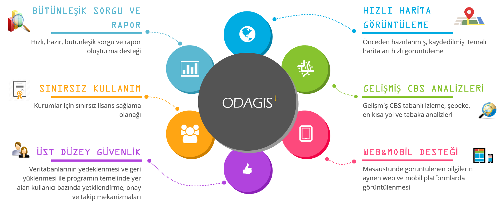
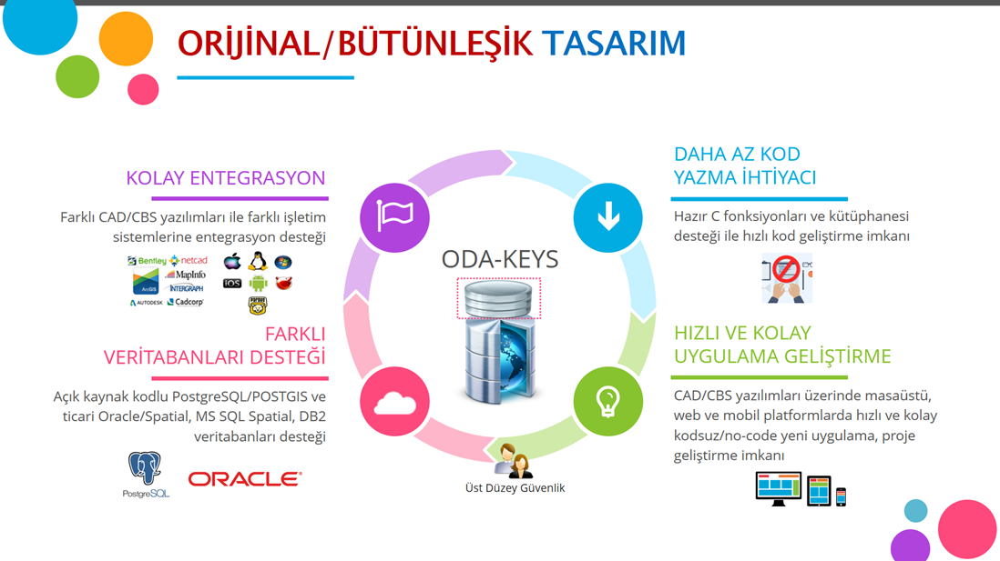
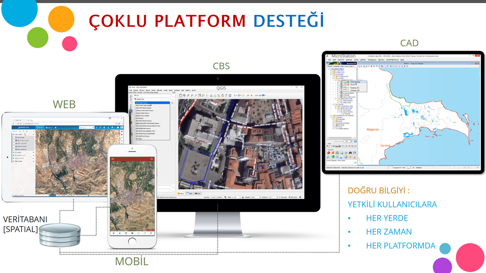
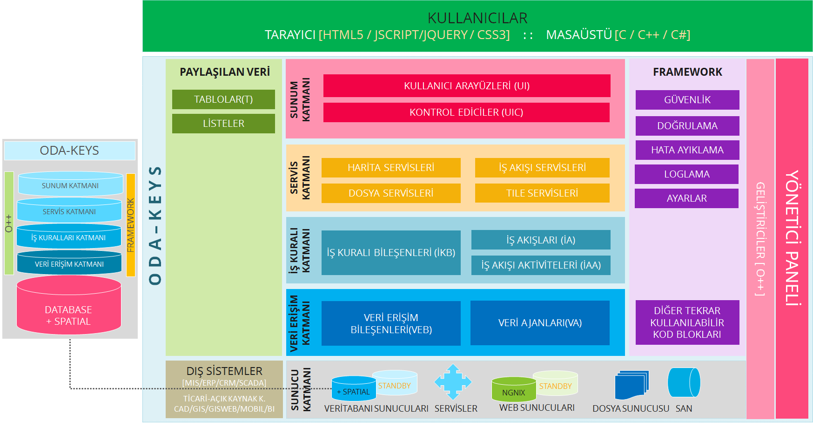

ODAGIS+™ planlama, imalat, işletme ve acil durum yönetimi faaliyetleri için gerekli harita ve bilgilere merkezi, güvenli bir şekilde ulaşmayı sağlayan coğrafi bilgi sistemi tabanlı gelişmiş bir altyapı, çevre ve kent yönetimi çözümüdür. Bu çözüm, uzun yıllar boyunca ilgili kurum/kuruluşlarda gerçek ihtiyaçlar dikkate alınarak bu ihtiyaçları karşılamak amacıyla geliştirilen yazılımlardan meydana gelmektedir.

ODAGIS+™ yazılım platformunun arka planında açık, ölçeklenebilir, modüler, bütünleşik yapıda bir ODA-KEYS(Katmanlı Entegre Yönetim Sistemi) bulunmaktadır.

ODAGIS+™ yazılımı konumsal hassasiyeti yüksek bilgiyi yetkili kullanıcılara istenilen her mekanda, her zaman ve her platformda sunabilecek eşsiz bir tasarıma sahiptir.

ODAGIS+™ yazılım paketi ve arka planında yer alan ODA-KEYS teknolojisinin şematik gösterimi aşağıda verilmektedir :
